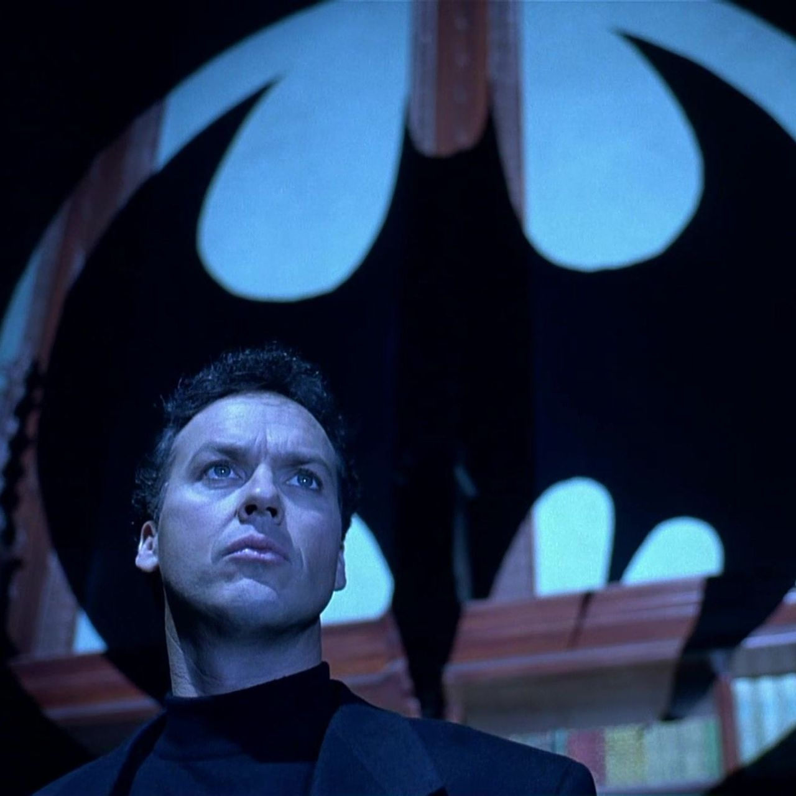
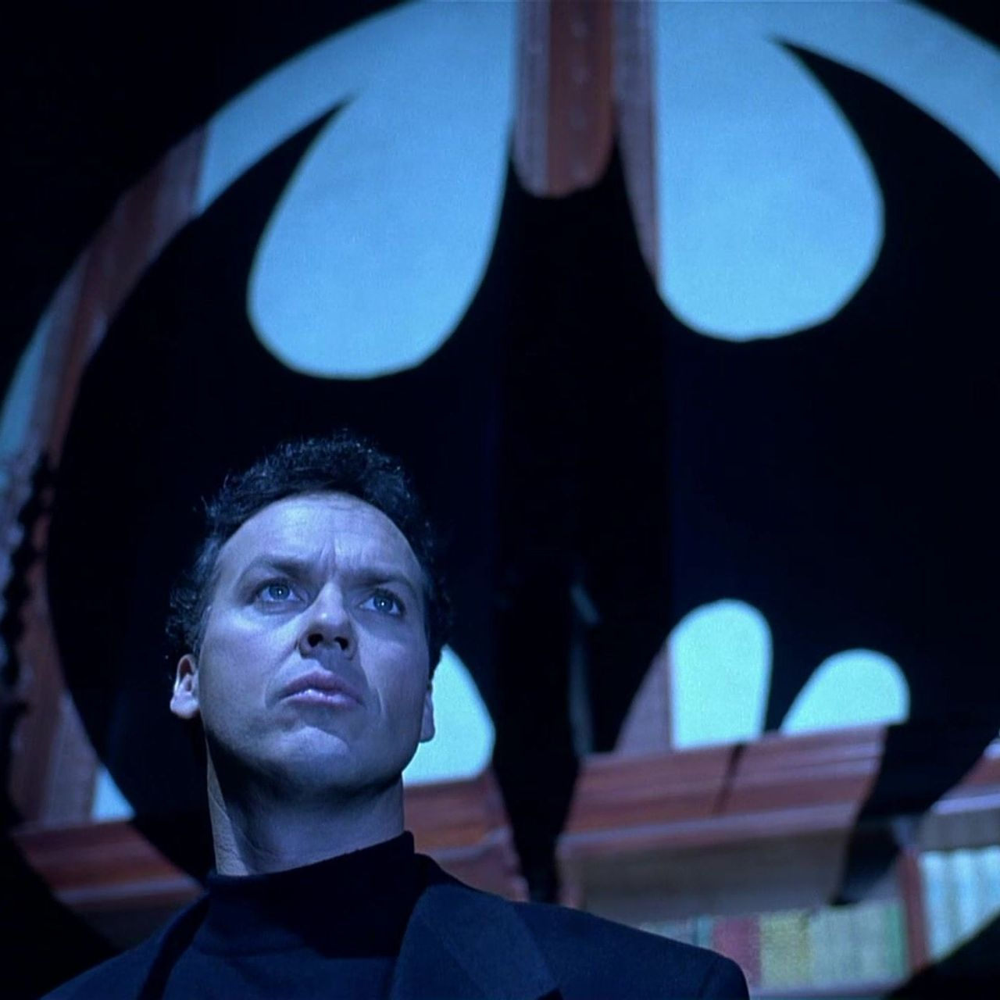

La identidad secreta de Batman es Bruce Wayne, un multimillonario magnate empresarial y filántropo dueño de Empresas Wayne en Gotham City. Después de presenciar el asesinato de sus padres, el Dr. Thomas Wayne y Martha Wayne en un violento y fallido asalto cuando era niño, juró venganza contra los criminales, un juramento moderado por el sentido de la justicia. Bruce Wayne se entrena física e intelectualmente y crea un traje inspirado en los murciélagos para combatir el crimen, con sus gadgets de combate del batcinturón y sus vehículos
A diferencia de los superhéroes, no tiene superpoderes: recurre a su intelecto, así como a aplicaciones científicas y tecnológicas para crear armas y herramientas con las cuales lleva a cabo sus actividades. Vive en la mansión Wayne, en cuyos subterráneos se encuentra la Batcueva, el centro de operaciones de Batman Recibe la ayuda constante de otros aliados, Nightwing, el comisionado de la policía local, James Gordon, y su mayordomo Alfred Pennyworth. Una gran variedad de villanos conforman la galería de Batman
Se trata de uno de los personajes más emblemáticos de DC Comics. Dada su buena aceptación, obtuvo su propia revista en 1940. Tres años después, Columbia Pictures estrenó la primera adaptación para la televisión del personaje, a la cual le siguió la serie Batman y Robin, en 1949. A mediados de la década de 1960, se lanzó otra serie titulada Batman que utilizó un concepto más «camp» que terminó apartándolo de su tono sombrío con el que originalmente fue concebido. Más adelante, los escritores Dennis O'Neil, Neal Adams y Frank Miller produjeron nuevo material escrito sobre el universo de Batman entre los años 1970 y 1980, retomando el diseño y elementos originales de la franquicia. Se considera que la película homónima de Tim Burton, estrenada en 1989, tuvo un papel importante en la popularidad contemporánea del hombre murciélago.
 
